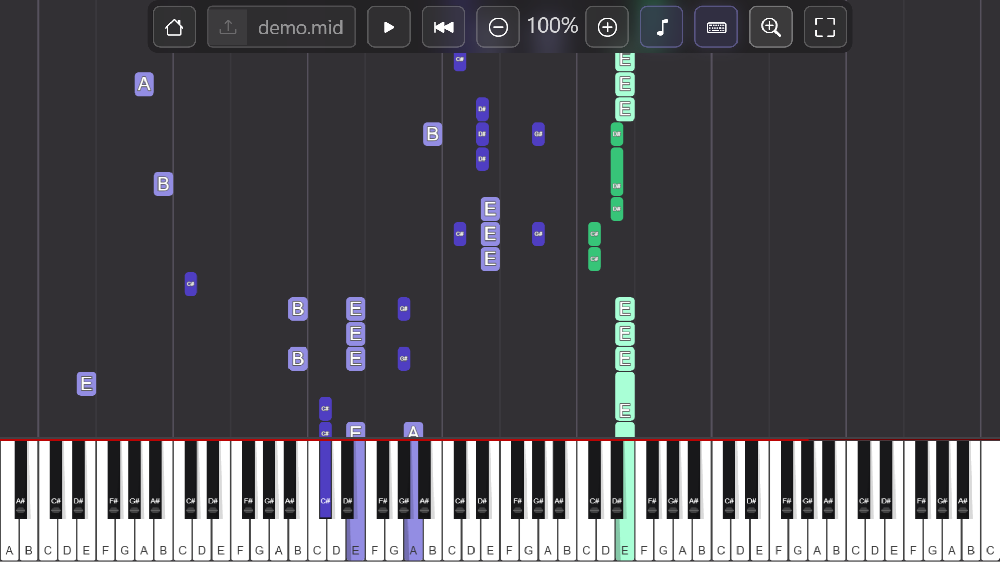

Learn piano songs faster
The same falling-note visualisation from my YouTube channel, but interactive and customizable for faster learning. Copy the falling notes, adjust speeds, and turn any audio into playable MIDI files.
Features
MIDI Visualiser
- Visual falling notes with key labels
- Adjustable playback speed
- Zoom in for easier note reading
- Upload and play any MIDI file
Audio-to-MIDI converter
- Convert any piano recording to MIDI
- AI-powered chord recognition
- Left/right hand separation
- Unlimited conversions